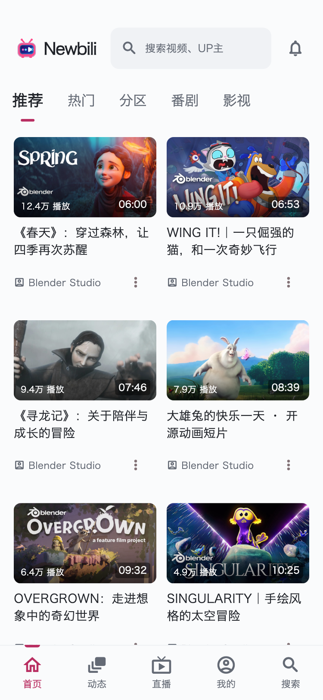

<!doctype html>
<html lang="zh-CN"><meta charset="utf-8"><meta name="viewport" content="width=device-width, initial-scale=1"><title>Newbili · Android 界面预览</title>
<style>
:root{color-scheme:light;font:15px/1.6 -apple-system,BlinkMacSystemFont,"PingFang SC",sans-serif;color:#202329;background:#f0f2f5}*{box-sizing:border-box}body{margin:0}header,main,footer{max-width:1280px;margin:auto;padding:24px}header{display:flex;justify-content:space-between;align-items:center;gap:24px}h1{font-size:22px;letter-spacing:-.5px;margin:4px 0}p{margin:4px 0;color:#626977}a{color:#b92f62}nav{display:flex;flex-wrap:wrap;gap:8px;margin:0 0 24px}button{border:0;background:#fff;border-radius:8px;color:#515965;padding:12px 18px;cursor:pointer;font:inherit;min-height:48px}button[aria-pressed=true]{background:#b92f62;color:white}button:focus-visible{outline:3px solid #ff8bb3;outline-offset:3px}.stage{display:flex;justify-content:center;align-items:start;padding:24px;background:#e5e8ed;border-radius:16px;min-height:500px}img{display:block;max-width:100%;height:auto;box-shadow:0 8px 30px #10182015;border-radius:4px}.phone{width:375px}.tablet{width:100%}video{max-width:100%;width:375px;border-radius:4px}footer{font-size:12px;padding-top:0}.stamp{font-size:12px;color:#777e8a;white-space:nowrap}@media(max-width:600px){header,main,footer{padding:16px}.stage{padding:12px}header{align-items:start}.stamp{display:none}button{padding:10px 13px}h1{font-size:20px}}[hidden]{display:none!important}
</style>
<header><div><h1>Newbili Android · 界面与动效</h1><p>重点参考 <a href="https://github.com/Richasy/BiliBili-UWP">Richasy/BiliBili-UWP</a>，使用自定义 Material 组件。</p></div><span class="stamp">2026.09.15 / UI REVIEW</span></header>
<main><nav aria-label="查看界面">
<button data-file="uwp-phone-light.png" aria-pressed="true">手机 · 浅色</button><button data-file="uwp-phone-dark.png" aria-pressed="false">手机 · 深色</button><button data-file="uwp-tablet-dark.png" aria-pressed="false">平板</button><button data-file="uwp-tablet-pane.png" aria-pressed="false">平板 · 副页</button><button data-file="uwp-tablet-player.png" aria-pressed="false">平板 · 播放</button><button data-file="cover-motion.mp4" aria-pressed="false">封面转场</button>
</nav><div class="stage"><video id="motion" controls playsinline loop preload="metadata" hidden src="cover-motion.mp4" aria-label="封面展开与返回的逐帧动效演示"></video></div></main>
<footer><p>当前 Flutter 组件渲染，使用演示素材与数据。尚未完成 Android 实机验收。</p><p><a href="README.md">预览说明与素材来源</a> · 视频为逐帧渲染，不用于衡量设备帧率。</p></footer>
<script>const screen=document.getElementById('screen'),motion=document.getElementById('motion');document.querySelectorAll('button[data-file]').forEach(button=>button.addEventListener('click',()=>{document.querySelectorAll('button').forEach(b=>b.setAttribute('aria-pressed',String(b===button)));const movie=button.dataset.file.endsWith('.mp4');screen.hidden=movie;motion.hidden=!movie;if(!movie){motion.pause();screen.src=button.dataset.file;screen.className=button.dataset.file.includes('tablet')?'tablet':'phone';screen.alt='Newbili '+button.textContent+'组件预览'}}));</script></html>
